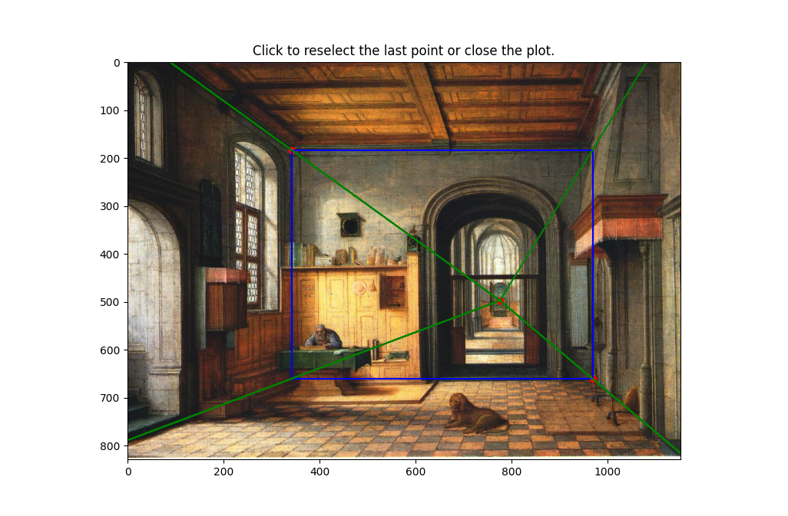

Creating the Web
To get a 3d representation of the image, we can break the scene down into 5 planes (middle, left, bottom, right, top). To do this, we identify a vanishing point along with the corners of the middle plane:

To get a 3d representation of the image, we can break the scene down into 5 planes (middle, left, bottom, right, top). To do this, we identify a vanishing point along with the corners of the middle plane:
To recover the 2d coordinate points of the planes, we compute all intersections of the web rays with the image border lines. A web ray would be defined as the ray from the vanishing point to one of the corners of the middle plane.
We start at one web ray. This ray intersects two lines on the image border. Pick an intersection to append to a running list of intersections arbitrarily. Cycle to the next ray counter clockwise. The next ray will also intersect with two lines on the image border. We append the intersects in the order of which one is closer axis aligned to the previous intersection.
After this, we can combine these intersection points with the points in the middle plane to get the 2d points of all the planes:
This image contains also the bounding boxes for the homography which we compute based on 3d correspondences described in the next section.
To compute the aspect ratios for the homographies, we need to assign every vertex of every plane to a 3d point.
We start with assuming that the world coordinates for the bottom plane all have a $z$ component of 0. Then the 3d point assignments are:
Suppose we now want to calculate the 3d position of the point $p$ labeled in red. Then we can use the quadrilateral bisection property which yields perspective consistent ratios along the length of a quadrilateral on iterative diagonal intersections:
To apply this, we first instantiate a horizontal line going through $p$. We sort the lines in order from closest to the middle plane to furthest along the given axis and apply the ratio property repeatedly on the containing quadrilateral until a ratio line is sufficiently close to the target line. Now that we have the ratio, if $p$ was within the bound of the bottom plane, we set the ratio as $1 - r$, otherwise, we set the ratio to be $1/(1 - r)$. In this example, suppose $r = 1 / 10$. Then we set $r \leftarrow 1 - r$ and compute $p$ as \begin{equation*} r \cdot [(1, 0, 0) - (0, 0, 0)] + (0, 0, 0) \end{equation*}
Propagating these ratios and repeating the calculations for all other planes, we can determine the aspect ratios for the rectified homography.
After instantiating the canvases for the homography, we crop each portion of the image and perform a homography locally from each plane onto their corresponding canvases.
Now that we have the 3d coordinates of each image, we can do a texture map onto a plane. This is done by instantiating the plane by counter-clockwise oriented points, and setting the origin, u, v vectors for each plane:
We can perform this on any image with one point perspective, as long as we can find a good guess for the 3d coordinates of the bottom plane. For this one, I used an $x$ to $y$ ratio of $5$.
Here is another hallway-like mapping:
In this example, we see that the method does not do well when the objects in the scene are not planar. The trees and bush are noticeably warped/cut off by the transformations
In the previous experiments, we had the vanishing point close to the center of the imaging plane. But when there is enough of a shift of the vanishing point, we start to see two specific vanishing points which form a vanishing line.
We can think of this as two separate one point perspectives to build the web:
Now that we have our web, we can use the vanishing points to project the inner rectangles in each web outwards. To specifically determine how much we should project each plane outwards, we determine the maximum possible projection such that one of the corners of the planes still lies within the image borders. Although it is possible to choose the minimum as a metric, it can cause the planes to be calculated incorrectly when the perspective lines are close. Choosing the maximum also helps with stability.
To compute the 3d coordinates of each point, we first establish the ratios of x, y, z such that max(x, y, z) = 1. Then we apply the coordinate estimates to each vertex in the top and bottom planes shown below:
Now that we have the initial coordinates, we can use the same trick with quadrilateral ratios in the previous section to compute the ratio in which we expanded outwards by, and propagate the coordinate estimates across the vertices.
Computing the homography is exactly the same as in the one point perspective images, and at the end, we get two mosaics
We remove the one plane from each figure and combine the textures into a 3d representation:
Here is another 2-point perspective representation with a photo of Doe Library instead: